3 Section 2 - Linear Models Overview
In the Linear Models section, you will learn how to do linear regression.
After completing this section, you will be able to:
- Use multivariate regression to adjust for confounders.
- Write linear models to describe the relationship between two or more variables.
- Calculate the least squares estimates for a regression model using the lm function.
- Understand the differences between tibbles and data frames.
- Use the
do()function to bridge R functions and the tidyverse. - Use the
tidy(),glance(), andaugment()functions from the broom package. - Apply linear regression to measurement error models.
This section has four parts: Introduction to Linear Models, Least Squares Estimates, Tibbles, do, and broom, and Regression and Baseball.
3.1 Confounding: Are BBs More Predictive?
The textbook for this section is available here
Key points
- Association is not causation!
- Although it may appear that BB cause runs, it is actually the HR that cause most of these runs. We say that BB are confounded with HR.
- Regression can help us account for confounding.
Code
# find regression line for predicting runs from BBs
bb_slope <- Teams %>%
filter(yearID %in% 1961:2001 ) %>%
mutate(BB_per_game = BB/G, R_per_game = R/G) %>%
lm(R_per_game ~ BB_per_game, data = .) %>%
.$coef %>%
.[2]
bb_slope## BB_per_game
## 0.7353288# compute regression line for predicting runs from singles
singles_slope <- Teams %>%
filter(yearID %in% 1961:2001 ) %>%
mutate(Singles_per_game = (H-HR-X2B-X3B)/G, R_per_game = R/G) %>%
lm(R_per_game ~ Singles_per_game, data = .) %>%
.$coef %>%
.[2]
singles_slope## Singles_per_game
## 0.4494253# calculate correlation between HR, BB and singles
Teams %>%
filter(yearID %in% 1961:2001 ) %>%
mutate(Singles = (H-HR-X2B-X3B)/G, BB = BB/G, HR = HR/G) %>%
summarize(cor(BB, HR), cor(Singles, HR), cor(BB,Singles))## cor(BB, HR) cor(Singles, HR) cor(BB, Singles)
## 1 0.4039313 -0.1737435 -0.056038223.2 Stratification and Multivariate Regression
The textbook for this section is available here
Key points
- A first approach to check confounding is to keep HRs fixed at a certain value and then examine the relationship between BB and runs.
- The slopes of BB after stratifying on HR are reduced, but they are not 0, which indicates that BB are helpful for producing runs, just not as much as previously thought.
Code
# stratify HR per game to nearest 10, filter out strata with few points
dat <- Teams %>% filter(yearID %in% 1961:2001) %>%
mutate(HR_strata = round(HR/G, 1),
BB_per_game = BB / G,
R_per_game = R / G) %>%
filter(HR_strata >= 0.4 & HR_strata <=1.2)
# scatterplot for each HR stratum
dat %>%
ggplot(aes(BB_per_game, R_per_game)) +
geom_point(alpha = 0.5) +
geom_smooth(method = "lm") +
facet_wrap( ~ HR_strata)## `geom_smooth()` using formula 'y ~ x'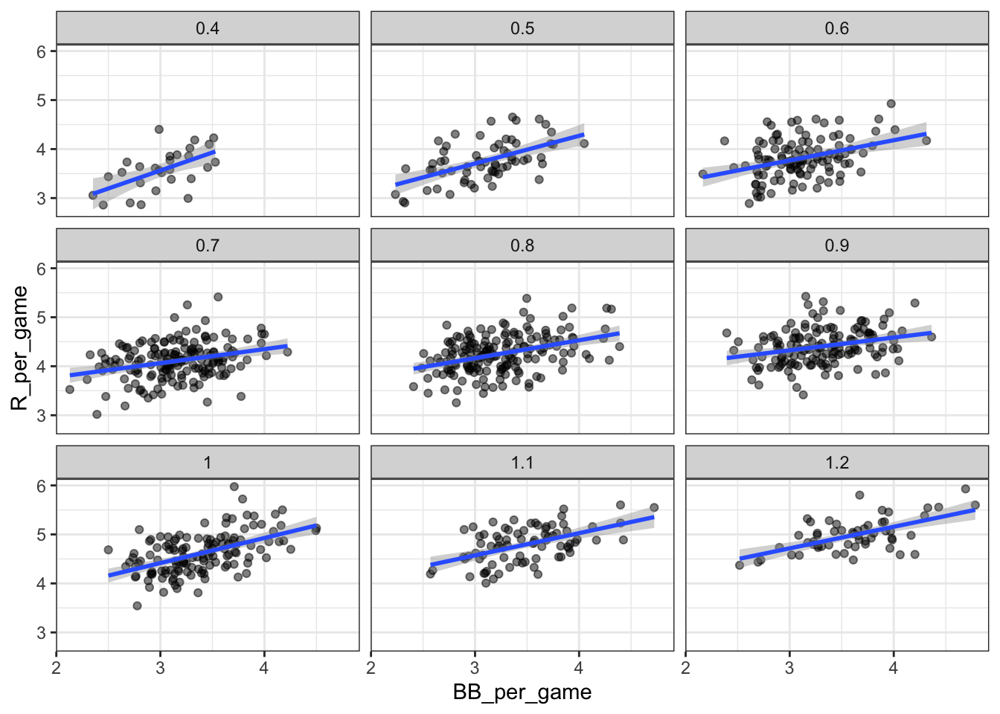
# calculate slope of regression line after stratifying by HR
dat %>%
group_by(HR_strata) %>%
summarize(slope = cor(BB_per_game, R_per_game)*sd(R_per_game)/sd(BB_per_game))## `summarise()` ungrouping output (override with `.groups` argument)## # A tibble: 9 x 2
## HR_strata slope
## <dbl> <dbl>
## 1 0.4 0.734
## 2 0.5 0.566
## 3 0.6 0.412
## 4 0.7 0.285
## 5 0.8 0.365
## 6 0.9 0.261
## 7 1 0.512
## 8 1.1 0.454
## 9 1.2 0.440# stratify by BB
dat <- Teams %>% filter(yearID %in% 1961:2001) %>%
mutate(BB_strata = round(BB/G, 1),
HR_per_game = HR / G,
R_per_game = R / G) %>%
filter(BB_strata >= 2.8 & BB_strata <=3.9)
# scatterplot for each BB stratum
dat %>% ggplot(aes(HR_per_game, R_per_game)) +
geom_point(alpha = 0.5) +
geom_smooth(method = "lm") +
facet_wrap( ~ BB_strata)## `geom_smooth()` using formula 'y ~ x'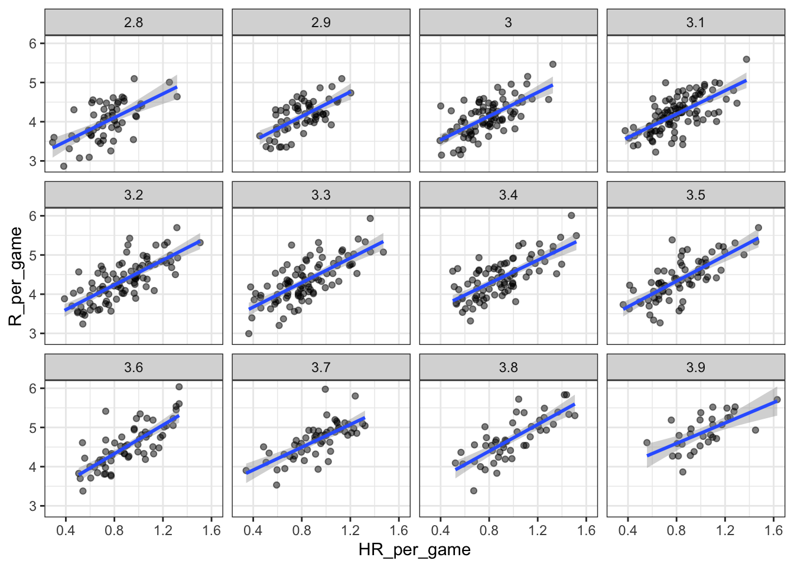
# slope of regression line after stratifying by BB
dat %>%
group_by(BB_strata) %>%
summarize(slope = cor(HR_per_game, R_per_game)*sd(R_per_game)/sd(HR_per_game))## `summarise()` ungrouping output (override with `.groups` argument)## # A tibble: 12 x 2
## BB_strata slope
## <dbl> <dbl>
## 1 2.8 1.52
## 2 2.9 1.57
## 3 3 1.52
## 4 3.1 1.49
## 5 3.2 1.58
## 6 3.3 1.56
## 7 3.4 1.48
## 8 3.5 1.63
## 9 3.6 1.83
## 10 3.7 1.45
## 11 3.8 1.70
## 12 3.9 1.303.3 Linear Models
The textbook for this section is available here
Key points
- “Linear” here does not refer to lines, but rather to the fact that the conditional expectation is a linear combination of known quantities.
- In Galton’s model, we assume \(Y\) (son’s height) is a linear combination of a constant and \(X\) (father’s height) plus random noise. We further assume that \(\epsilon_i\) are independent from each other, have expected value 0 and the standard deviation \(\sigma\) which does not depend on i.
- Note that if we further assume that \(\epsilon\) is normally distributed, then the model is exactly the same one we derived earlier by assuming bivariate normal data.
- We can subtract the mean from \(X\) to make \(\beta_0\) more interpretable.
3.4 Assessment: Introduction to Linear Models
- When we stratified our regression lines for runs per game vs. bases on balls by the number of home runs, what happened?
- A. The slope of runs per game vs. bases on balls within each stratum was reduced because we removed confounding by home runs.
- B. The slope of runs per game vs. bases on balls within each stratum was reduced because there were fewer data points.
- C. The slope of runs per game vs. bases on balls within each stratum increased after we removed confounding by home runs.
- D. The slope of runs per game vs. bases on balls within each stratum stayed about the same as the original slope.
- We run a linear model for sons’ heights vs. fathers’ heights using the Galton height data, and get the following results:
> lm(son ~ father, data = galton_heights)
Call:
lm(formula = son ~ father, data = galton_heights)
Coefficients:
(Intercept) father
35.71 0.50 Interpret the numeric coefficient for “father.”
- A. For every inch we increase the son’s height, the predicted father’s height increases by 0.5 inches.
- B. For every inch we increase the father’s height, the predicted son’s height grows by 0.5 inches.
- C. For every inch we increase the father’s height, the predicted son’s height is 0.5 times greater.
- We want the intercept term for our model to be more interpretable, so we run the same model as before but now we subtract the mean of fathers’ heights from each individual father’s height to create a new variable centered at zero.
galton_heights <- galton_heights %>%
mutate(father_centered=father - mean(father))We run a linear model using this centered fathers’ height variable.
> lm(son ~ father_centered, data = galton_heights)
Call:
lm(formula = son ~ father_centered, data = galton_heights)
Coefficients:
(Intercept) father_centered
70.45 0.50 Interpret the numeric coefficient for the intercept.
- A. The height of a son of a father of average height is 70.45 inches.
- B. The height of a son when a father’s height is zero is 70.45 inches.
- C. The height of an average father is 70.45 inches.
- Suppose we fit a multivariate regression model for expected runs based on BB and HR:
\(E[R|BB=x_1, HR=x_2] = \beta_0+\beta_1x_1+\beta_2x_2\)
Suppose we fix \(BB = x_1\). Then we observe a linear relationship between runs and HR with intercept of:
- A. \(\beta_0\)
- B. \(\beta_0 + \beta_2x_2\)
- C. \(\beta_0 + \beta_1x_1\)
- D. \(\beta_0 + \beta_2x_1\)
- Which of the following are assumptions for the errors \(\epsilon_i\) in a linear regression model? Check ALL correct answers.
- A. The \(\epsilon_i\) are independent of each other
- B. The \(\epsilon_i\) have expected value 0
- C. The variance of \(\epsilon_i\) is a constant
3.5 Least Squares Estimates (LSE)
The textbook for this section is available here
Key points
- For regression, we aim to find the coefficient values that minimize the distance of the fitted model to the data.
- Residual sum of squares (RSS) measures the distance between the true value and the predicted value given by the regression line. The values that minimize the RSS are called the least squares estimates (LSE).
- We can use partial derivatives to get the values for \(\beta_0\) and \(\beta_1\) in Galton’s data.
Code
# compute RSS for any pair of beta0 and beta1 in Galton's data
set.seed(1983)
galton_heights <- GaltonFamilies %>%
filter(gender == "male") %>%
group_by(family) %>%
sample_n(1) %>%
ungroup() %>%
select(father, childHeight) %>%
rename(son = childHeight)
rss <- function(beta0, beta1, data){
resid <- galton_heights$son - (beta0+beta1*galton_heights$father)
return(sum(resid^2))
}
# plot RSS as a function of beta1 when beta0=25
beta1 = seq(0, 1, len=nrow(galton_heights))
results <- data.frame(beta1 = beta1,
rss = sapply(beta1, rss, beta0 = 25))
results %>% ggplot(aes(beta1, rss)) + geom_line() +
geom_line(aes(beta1, rss))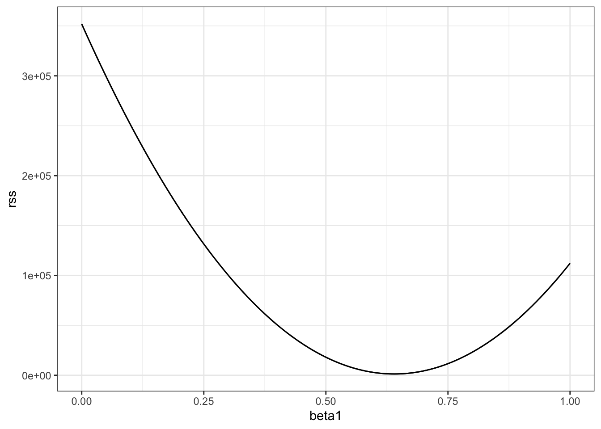
3.6 The lm Function
The textbook for this section is available here
Key points
- When calling the
lm()function, the variable that we want to predict is put to the left of the~symbol, and the variables that we use to predict is put to the right of the~symbol. The intercept is added automatically. - LSEs are random variables.
Code
# fit regression line to predict son's height from father's height
fit <- lm(son ~ father, data = galton_heights)
fit##
## Call:
## lm(formula = son ~ father, data = galton_heights)
##
## Coefficients:
## (Intercept) father
## 38.7646 0.4411# summary statistics
summary(fit)##
## Call:
## lm(formula = son ~ father, data = galton_heights)
##
## Residuals:
## Min 1Q Median 3Q Max
## -9.4228 -1.7022 0.0333 1.5670 9.3567
##
## Coefficients:
## Estimate Std. Error t value Pr(>|t|)
## (Intercept) 38.76457 5.41093 7.164 2.03e-11 ***
## father 0.44112 0.07825 5.637 6.72e-08 ***
## ---
## Signif. codes: 0 '***' 0.001 '**' 0.01 '*' 0.05 '.' 0.1 ' ' 1
##
## Residual standard error: 2.659 on 177 degrees of freedom
## Multiple R-squared: 0.1522, Adjusted R-squared: 0.1474
## F-statistic: 31.78 on 1 and 177 DF, p-value: 6.719e-083.7 LSE are Random Variables
The textbook for this section is available here
Key points
- Because they are derived from the samples, LSE are random variables.
- \(\beta_0\) and \(\beta_1\) appear to be normally distributed because the central limit theorem plays a role.
- The t-statistic depends on the assumption that \(\epsilon\) follows a normal distribution.
Code
# Monte Carlo simulation
B <- 1000
N <- 50
lse <- replicate(B, {
sample_n(galton_heights, N, replace = TRUE) %>%
lm(son ~ father, data = .) %>%
.$coef
})
lse <- data.frame(beta_0 = lse[1,], beta_1 = lse[2,])
# Plot the distribution of beta_0 and beta_1
if(!require(gridExtra)) install.packages("gridExtra")## Loading required package: gridExtra##
## Attaching package: 'gridExtra'## The following object is masked from 'package:dplyr':
##
## combinelibrary(gridExtra)
p1 <- lse %>% ggplot(aes(beta_0)) + geom_histogram(binwidth = 5, color = "black")
p2 <- lse %>% ggplot(aes(beta_1)) + geom_histogram(binwidth = 0.1, color = "black")
grid.arrange(p1, p2, ncol = 2)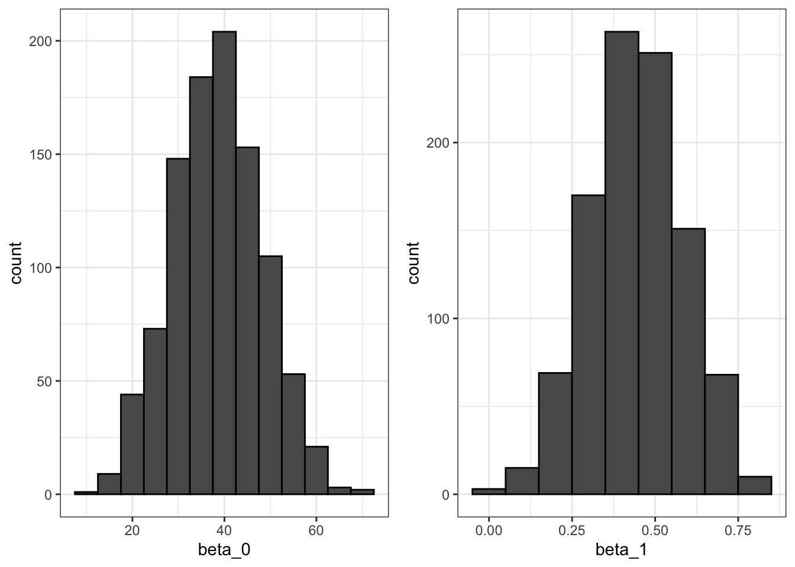
# summary statistics
sample_n(galton_heights, N, replace = TRUE) %>%
lm(son ~ father, data = .) %>%
summary %>%
.$coef## Estimate Std. Error t value Pr(>|t|)
## (Intercept) 34.4729422 8.6021831 4.007464 0.0002129225
## father 0.4990193 0.1240572 4.022493 0.0002030210lse %>% summarize(se_0 = sd(beta_0), se_1 = sd(beta_1))## se_0 se_1
## 1 9.683973 0.14114043.8 Advanced Note on LSE
Although interpretation is not straight-forward, it is also useful to know that the LSE can be strongly correlated, which can be seen using this code:
lse %>% summarize(cor(beta_0, beta_1))## cor(beta_0, beta_1)
## 1 -0.9993386However, the correlation depends on how the predictors are defined or transformed.
Here we standardize the father heights, which changes \(x_i\) to \(x_i - \bar{x}\).
B <- 1000
N <- 50
lse <- replicate(B, {
sample_n(galton_heights, N, replace = TRUE) %>%
mutate(father = father - mean(father)) %>%
lm(son ~ father, data = .) %>% .$coef
})Observe what happens to the correlation in this case:
cor(lse[1,], lse[2,]) ## [1] 0.11009293.9 Predicted Variables are Random Variables
The textbook for this section is available here
Key points
- The predicted value is often denoted as \(\hat{Y}\), which is a random variable. Mathematical theory tells us what the standard error of the predicted value is.
- The
predict()function in R can give us predictions directly.
Code
# plot predictions and confidence intervals
galton_heights %>% ggplot(aes(son, father)) +
geom_point() +
geom_smooth(method = "lm")## `geom_smooth()` using formula 'y ~ x'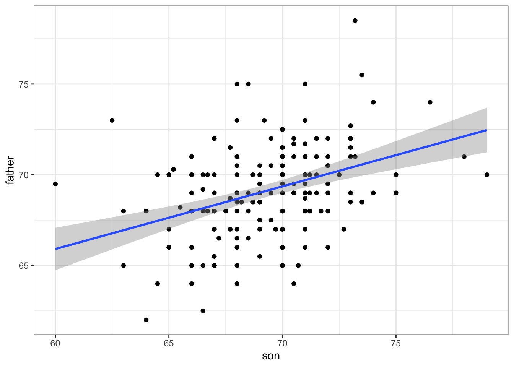
# predict Y directly
fit <- galton_heights %>% lm(son ~ father, data = .)
Y_hat <- predict(fit, se.fit = TRUE)
names(Y_hat)## [1] "fit" "se.fit" "df" "residual.scale"# plot best fit line
galton_heights %>%
mutate(Y_hat = predict(lm(son ~ father, data=.))) %>%
ggplot(aes(father, Y_hat))+
geom_line()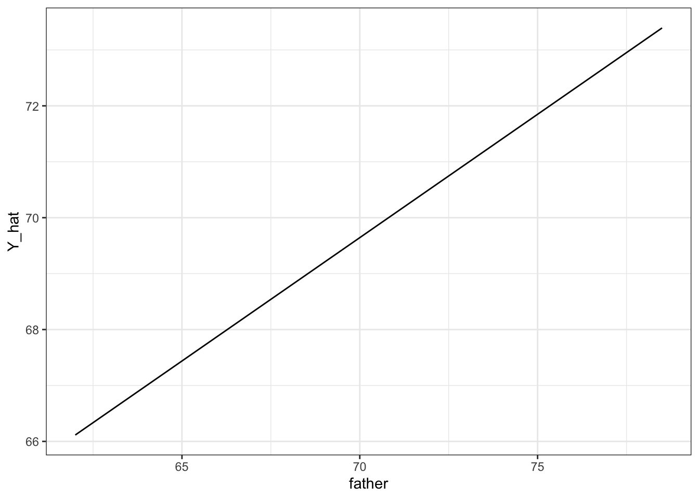
3.10 Assessment - Least Squares Estimates (LSE), part 1
- The following code was used in the video to plot RSS with \(\beta_0=25\).
beta1 = seq(0, 1, len=nrow(galton_heights))
results <- data.frame(beta1 = beta1,
rss = sapply(beta1, rss, beta0 = 25))
results %>% ggplot(aes(beta1, rss)) + geom_line() +
geom_line(aes(beta1, rss), col=2)In a model for sons’ heights vs fathers’ heights, what is the least squares estimate (LSE) for \(\beta_1\) if we assume \(\hat{\beta}_{0}\) is 36? Hint: modify the code above to do your analysis.
# compute RSS for any pair of beta0 and beta1 in Galton's data
set.seed(1983)
galton_heights <- GaltonFamilies %>%
filter(gender == "male") %>%
group_by(family) %>%
sample_n(1) %>%
ungroup() %>%
select(father, childHeight) %>%
rename(son = childHeight)
rss <- function(beta0, beta1, data){
resid <- galton_heights$son - (beta0+beta1*galton_heights$father)
return(sum(resid^2))
}
# plot RSS as a function of beta1 when beta0=36
beta1 = seq(0, 1, len=nrow(galton_heights))
results <- data.frame(beta1 = beta1,
rss = sapply(beta1, rss, beta0 = 36))
results %>% ggplot(aes(beta1, rss)) + geom_line() +
geom_line(aes(beta1, rss))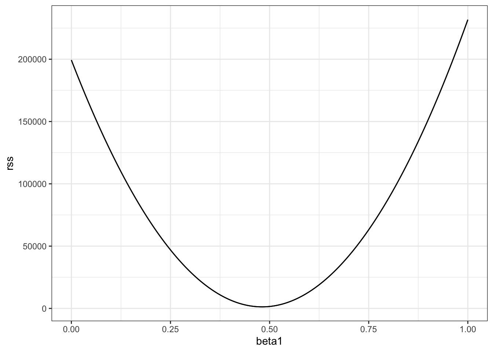
- A. 0.65
- B. 0.5
- C. 0.2
- D. 12
The least squares estimates for the parameters \(\beta_0, \beta_1, \dots, \beta_n\) minimize the residual sum of squares.
Load the
Lahmanlibrary and filter theTeamsdata frame to the years 1961-2001.
Run a linear model in R predicting the number of runs per game based on the number of bases on balls and the number of home runs. Remember to first limit your data to 1961-2001.
What is the coefficient for bases on balls?
fit <- Teams %>% filter(yearID %in% 1961:2001) %>%
mutate(R_per_game = R / G, BB_per_game = BB / G, HR_per_game = HR / G) %>%
lm(R_per_game ~ BB_per_game + HR_per_game, data = .)
summary(fit)##
## Call:
## lm(formula = R_per_game ~ BB_per_game + HR_per_game, data = .)
##
## Residuals:
## Min 1Q Median 3Q Max
## -0.87325 -0.24507 -0.01449 0.23866 1.24218
##
## Coefficients:
## Estimate Std. Error t value Pr(>|t|)
## (Intercept) 1.74430 0.08236 21.18 <2e-16 ***
## BB_per_game 0.38742 0.02701 14.34 <2e-16 ***
## HR_per_game 1.56117 0.04896 31.89 <2e-16 ***
## ---
## Signif. codes: 0 '***' 0.001 '**' 0.01 '*' 0.05 '.' 0.1 ' ' 1
##
## Residual standard error: 0.3484 on 1023 degrees of freedom
## Multiple R-squared: 0.6503, Adjusted R-squared: 0.6496
## F-statistic: 951.2 on 2 and 1023 DF, p-value: < 2.2e-16- A. 0.39
- B. 1.56
- C. 1.74
- D. 0.027
The coefficient for bases on balls is 0.39; the coefficient for home runs is 1.56; the intercept is 1.74; the standard error for the BB coefficient is 0.027.
- We run a Monte Carlo simulation where we repeatedly take samples of N = 100 from the Galton heights data and compute the regression slope coefficients for each sample:
B <- 1000
N <- 100
lse <- replicate(B, {
sample_n(galton_heights, N, replace = TRUE) %>%
lm(son ~ father, data = .) %>% .$coef
})
lse <- data.frame(beta_0 = lse[1,], beta_1 = lse[2,])What does the central limit theorem tell us about the variables beta_0 and beta_1?
- A. They are approximately normally distributed.
- B. The expected value of each is the true value of \(\beta_0\) and \(\beta_1\) (assuming the Galton heights data is a complete population).
- C. The central limit theorem does not apply in this situation.
- D. It allows us to test the hypothesis that \(\beta_0 = 0\) and \(\beta_0 = 1\)
- In an earlier video, we ran the following linear model and looked at a summary of the results.
$\beta_0$
> mod <- lm(son ~ father, data = galton_heights)
> summary(mod)
Call:
lm(formula = son ~ father, data = galton_heights)
Residuals:
Min 1Q Median 3Q Max
-5.902 -1.405 0.092 1.342 8.092
Coefficients:
Estimate Std. Error t value Pr(>|t|)
(Intercept) 35.7125 4.5174 7.91 2.8e-13 ***
father 0.5028 0.0653 7.70 9.5e-13 ***
---
Signif. codes: 0 ‘***’ 0.001 ‘**’ 0.01 ‘*’ 0.05 ‘.’ 0.1 ‘ ’ 1
$\beta_0$What null hypothesis is the second p-value (the one in the father row) testing?
- A. \(\beta_1 = 1\), where \(\beta_1\) is the coefficient for the variable “father.”
- B. \(\beta_1 = 0.503\), where \(\beta_1\) is the coefficient for the variable “father.”
- C. \(\beta_1 = 0\), where \(\beta_1\) is the coefficient for the variable “father.”
- Which R code(s) below would properly plot the predictions and confidence intervals for our linear model of sons’ heights?
Select ALL that apply.
- A.
galton_heights %>% ggplot(aes(father, son)) +
geom_point() +
geom_smooth()- B.
galton_heights %>% ggplot(aes(father, son)) +
geom_point() +
geom_smooth(method = "lm")- C.
model <- lm(son ~ father, data = galton_heights)
predictions <- predict(model, interval = c("confidence"), level = 0.95)
data <- as.tibble(predictions) %>% bind_cols(father = galton_heights$father)
ggplot(data, aes(x = father, y = fit)) +
geom_line(color = "blue", size = 1) +
geom_ribbon(aes(ymin=lwr, ymax=upr), alpha=0.2) +
geom_point(data = galton_heights, aes(x = father, y = son))- D.
model <- lm(son ~ father, data = galton_heights)
predictions <- predict(model)
data <- as.tibble(predictions) %>% bind_cols(father = galton_heights$father)
ggplot(data, aes(x = father, y = fit)) +
geom_line(color = "blue", size = 1) +
geom_point(data = galton_heights, aes(x = father, y = son))3.11 Assessment - Least Squares Estimates, part 2
In Questions 7 and 8, you’ll look again at female heights from GaltonFamilies.
Define female_heights, a set of mother and daughter heights sampled from GaltonFamilies, as follows:
set.seed(1989, sample.kind="Rounding") #if you are using R 3.6 or later## Warning in set.seed(1989, sample.kind = "Rounding"): non-uniform 'Rounding' sampler usedoptions(digits = 3) # report 3 significant digits
female_heights <- GaltonFamilies %>%
filter(gender == "female") %>%
group_by(family) %>%
sample_n(1) %>%
ungroup() %>%
select(mother, childHeight) %>%
rename(daughter = childHeight)- Fit a linear regression model predicting the mothers’ heights using daughters’ heights.
What is the slope of the model?
fit <- lm(mother ~ daughter, data = female_heights)
fit$coef[2]## daughter
## 0.31What the intercept of the model?
fit$coef[1]## (Intercept)
## 44.2- Predict mothers’ heights using the model.
What is the predicted height of the first mother in the dataset?
predict(fit)[1]## 1
## 65.6What is the actual height of the first mother in the dataset?
female_heights$mother[1]## [1] 67We have shown how BB and singles have similar predictive power for scoring runs. Another way to compare the usefulness of these baseball metrics is by assessing how stable they are across the years. Because we have to pick players based on their previous performances, we will prefer metrics that are more stable. In these exercises, we will compare the stability of singles and BBs.
Before we get started, we want to generate two tables: one for 2002 and another for the average of 1999-2001 seasons. We want to define per plate appearance statistics, keeping only players with more than 100 plate appearances. Here is how we create the 2002 table:
bat_02 <- Batting %>% filter(yearID == 2002) %>%
mutate(pa = AB + BB, singles = (H - X2B - X3B - HR)/pa, bb = BB/pa) %>%
filter(pa >= 100) %>%
select(playerID, singles, bb)- Now compute a similar table but with rates computed over 1999-2001. Keep only rows from 1999-2001 where players have 100 or more plate appearances, calculate each player’s single rate and BB rate per season, then calculate the average single rate (
mean_singles) and average BB rate (mean_bb) per player over those three seasons.
How many players had a single rate mean_singles of greater than 0.2 per plate appearance over 1999-2001?
bat_99_01 <- Batting %>% filter(yearID %in% 1999:2001) %>%
mutate(pa = AB + BB, singles = (H - X2B - X3B - HR)/pa, bb = BB/pa) %>%
filter(pa >= 100) %>%
group_by(playerID) %>%
summarize(mean_singles = mean(singles), mean_bb = mean(bb))## `summarise()` ungrouping output (override with `.groups` argument)sum(bat_99_01$mean_singles > 0.2)## [1] 46How many players had a BB rate mean_bb of greater than 0.2 per plate appearance over 1999-2001?
sum(bat_99_01$mean_bb > 0.2)## [1] 3- Use
inner_join()to combine the `bat_02table with the table of 1999-2001 rate averages you created in the previous question.
What is the correlation between 2002 singles rates and 1999-2001 average singles rates?
dat <- inner_join(bat_02, bat_99_01)## Joining, by = "playerID"cor(dat$singles, dat$mean_singles)## [1] 0.551What is the correlation between 2002 BB rates and 1999-2001 average BB rates?
cor(dat$bb, dat$mean_bb)## [1] 0.717- Make scatterplots of
mean_singlesversussinglesandmean_bbversusbb.
Are either of these distributions bivariate normal?
dat %>%
ggplot(aes(singles, mean_singles)) +
geom_point()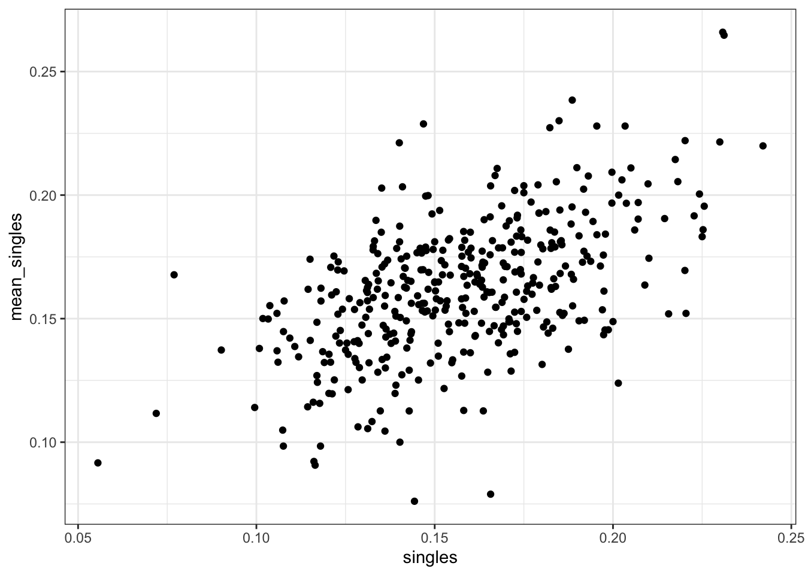
dat %>%
ggplot(aes(bb, mean_bb)) +
geom_point()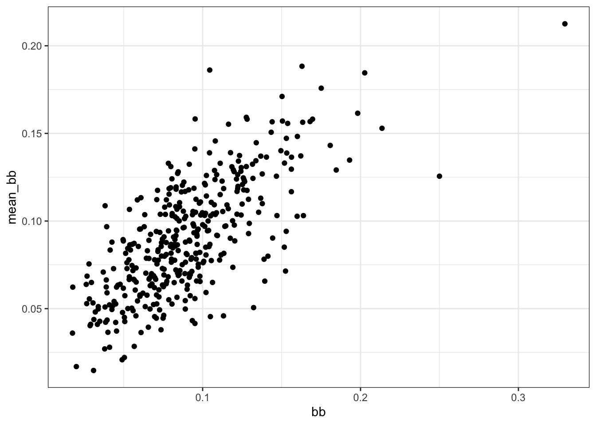
- A. Neither distribution is bivariate normal.
-
B.
singlesandmean_singlesare bivariate normal, butbbandmean_bbare not. -
C.
bbandmean_bbare bivariate normal, butsinglesandmean_singlesare not. - D. Both distributions are bivariate normal.
- Fit a linear model to predict 2002
singlesgiven 1999-2001mean_singles.
What is the coefficient of mean_singles, the slope of the fit?
fit_singles <- lm(singles ~ mean_singles, data = dat)
fit_singles$coef[2]## mean_singles
## 0.588Fit a linear model to predict 2002 bb given 1999-2001 mean_bb.
What is the coefficient of mean_bb, the slope of the fit?
fit_bb <- lm(bb ~ mean_bb, data = dat)
fit_bb$coef[2]## mean_bb
## 0.8293.12 Advanced dplyr: Tibbles
The textbook for this section is available here
Key points
- Tibbles can be regarded as a modern version of data frames and are the default data structure in the tidyverse.
- Some functions that do not work properly with data frames do work with tibbles.
Code
# stratify by HR
dat <- Teams %>% filter(yearID %in% 1961:2001) %>%
mutate(HR = round(HR/G, 1),
BB = BB/G,
R = R/G) %>%
select(HR, BB, R) %>%
filter(HR >= 0.4 & HR<=1.2)
# calculate slope of regression lines to predict runs by BB in different HR strata
dat %>%
group_by(HR) %>%
summarize(slope = cor(BB,R)*sd(R)/sd(BB))## `summarise()` ungrouping output (override with `.groups` argument)## # A tibble: 9 x 2
## HR slope
## <dbl> <dbl>
## 1 0.4 0.734
## 2 0.5 0.566
## 3 0.6 0.412
## 4 0.7 0.285
## 5 0.8 0.365
## 6 0.9 0.261
## 7 1 0.512
## 8 1.1 0.454
## 9 1.2 0.440# use lm to get estimated slopes - lm does not work with grouped tibbles
dat %>%
group_by(HR) %>%
lm(R ~ BB, data = .) %>%
.$coef## (Intercept) BB
## 2.198 0.638# inspect a grouped tibble
dat %>% group_by(HR) %>% head()## # A tibble: 6 x 3
## # Groups: HR [5]
## HR BB R
## <dbl> <dbl> <dbl>
## 1 0.9 3.56 4.24
## 2 0.7 3.97 4.47
## 3 0.8 3.37 4.69
## 4 1.1 3.46 4.42
## 5 1 2.75 4.61
## 6 0.9 3.06 4.58dat %>% group_by(HR) %>% class()## [1] "grouped_df" "tbl_df" "tbl" "data.frame"3.13 Tibbles: Differences from Data Frames
Key points
- Tibbles are more readable than data frames.
- If you subset a data frame, you may not get a data frame. If you subset a tibble, you always get a tibble.
- Tibbles can hold more complex objects such as lists or functions.
- Tibbles can be grouped.
Code
# inspect data frame and tibble
head(Teams)## yearID lgID teamID franchID divID Rank G Ghome W L DivWin WCWin LgWin WSWin R AB H X2B X3B HR BB SO SB CS HBP SF RA ER ERA CG SHO SV IPouts HA HRA BBA SOA E DP
## 1 1871 NA BS1 BNA <NA> 3 31 NA 20 10 <NA> <NA> N <NA> 401 1372 426 70 37 3 60 19 73 16 NA NA 303 109 3.55 22 1 3 828 367 2 42 23 243 24
## 2 1871 NA CH1 CNA <NA> 2 28 NA 19 9 <NA> <NA> N <NA> 302 1196 323 52 21 10 60 22 69 21 NA NA 241 77 2.76 25 0 1 753 308 6 28 22 229 16
## 3 1871 NA CL1 CFC <NA> 8 29 NA 10 19 <NA> <NA> N <NA> 249 1186 328 35 40 7 26 25 18 8 NA NA 341 116 4.11 23 0 0 762 346 13 53 34 234 15
## 4 1871 NA FW1 KEK <NA> 7 19 NA 7 12 <NA> <NA> N <NA> 137 746 178 19 8 2 33 9 16 4 NA NA 243 97 5.17 19 1 0 507 261 5 21 17 163 8
## 5 1871 NA NY2 NNA <NA> 5 33 NA 16 17 <NA> <NA> N <NA> 302 1404 403 43 21 1 33 15 46 15 NA NA 313 121 3.72 32 1 0 879 373 7 42 22 235 14
## 6 1871 NA PH1 PNA <NA> 1 28 NA 21 7 <NA> <NA> Y <NA> 376 1281 410 66 27 9 46 23 56 12 NA NA 266 137 4.95 27 0 0 747 329 3 53 16 194 13
## FP name park attendance BPF PPF teamIDBR teamIDlahman45 teamIDretro
## 1 0.834 Boston Red Stockings South End Grounds I NA 103 98 BOS BS1 BS1
## 2 0.829 Chicago White Stockings Union Base-Ball Grounds NA 104 102 CHI CH1 CH1
## 3 0.818 Cleveland Forest Citys National Association Grounds NA 96 100 CLE CL1 CL1
## 4 0.803 Fort Wayne Kekiongas Hamilton Field NA 101 107 KEK FW1 FW1
## 5 0.840 New York Mutuals Union Grounds (Brooklyn) NA 90 88 NYU NY2 NY2
## 6 0.845 Philadelphia Athletics Jefferson Street Grounds NA 102 98 ATH PH1 PH1as_tibble(Teams)## # A tibble: 2,925 x 48
## yearID lgID teamID franchID divID Rank G Ghome W L DivWin WCWin LgWin WSWin R AB H X2B X3B HR BB SO SB CS HBP SF RA ER ERA
## <int> <fct> <fct> <fct> <chr> <int> <int> <int> <int> <int> <chr> <chr> <chr> <chr> <int> <int> <int> <int> <int> <int> <int> <int> <int> <int> <int> <int> <int> <int> <dbl>
## 1 1871 NA BS1 BNA <NA> 3 31 NA 20 10 <NA> <NA> N <NA> 401 1372 426 70 37 3 60 19 73 16 NA NA 303 109 3.55
## 2 1871 NA CH1 CNA <NA> 2 28 NA 19 9 <NA> <NA> N <NA> 302 1196 323 52 21 10 60 22 69 21 NA NA 241 77 2.76
## 3 1871 NA CL1 CFC <NA> 8 29 NA 10 19 <NA> <NA> N <NA> 249 1186 328 35 40 7 26 25 18 8 NA NA 341 116 4.11
## 4 1871 NA FW1 KEK <NA> 7 19 NA 7 12 <NA> <NA> N <NA> 137 746 178 19 8 2 33 9 16 4 NA NA 243 97 5.17
## 5 1871 NA NY2 NNA <NA> 5 33 NA 16 17 <NA> <NA> N <NA> 302 1404 403 43 21 1 33 15 46 15 NA NA 313 121 3.72
## 6 1871 NA PH1 PNA <NA> 1 28 NA 21 7 <NA> <NA> Y <NA> 376 1281 410 66 27 9 46 23 56 12 NA NA 266 137 4.95
## 7 1871 NA RC1 ROK <NA> 9 25 NA 4 21 <NA> <NA> N <NA> 231 1036 274 44 25 3 38 30 53 10 NA NA 287 108 4.3
## 8 1871 NA TRO TRO <NA> 6 29 NA 13 15 <NA> <NA> N <NA> 351 1248 384 51 34 6 49 19 62 24 NA NA 362 153 5.51
## 9 1871 NA WS3 OLY <NA> 4 32 NA 15 15 <NA> <NA> N <NA> 310 1353 375 54 26 6 48 13 48 13 NA NA 303 137 4.37
## 10 1872 NA BL1 BLC <NA> 2 58 NA 35 19 <NA> <NA> N <NA> 617 2571 753 106 31 14 29 28 53 18 NA NA 434 166 2.9
## # … with 2,915 more rows, and 19 more variables: CG <int>, SHO <int>, SV <int>, IPouts <int>, HA <int>, HRA <int>, BBA <int>, SOA <int>, E <int>, DP <int>, FP <dbl>, name <chr>,
## # park <chr>, attendance <int>, BPF <int>, PPF <int>, teamIDBR <chr>, teamIDlahman45 <chr>, teamIDretro <chr># Note that the function was formerly called as.tibble()
# subsetting a data frame sometimes generates vectors
class(Teams[,20])## [1] "integer"# subsetting a tibble always generates tibbles
class(as_tibble(Teams[,20]))## [1] "tbl_df" "tbl" "data.frame"# pulling a vector out of a tibble
class(as_tibble(Teams)$HR)## [1] "integer"# access a non-existing column in a data frame or a tibble
Teams$hr## NULLas_tibble(Teams)$HR## [1] 3 10 7 2 1 9 3 6 6 14 0 1 7 0 2 4 4 5 0 0 9 0 6 13 0 5 4 8 2 1 1 17 4 2 7 6 2 2 15 0 2 0 2 7
## [45] 7 5 0 0 0 0 9 8 4 2 6 2 7 2 4 0 6 4 9 1 2 3 5 3 2 8 2 20 3 4 8 12 5 4 3 20 4 7 7 8 5 8 12 5
## [89] 12 7 17 11 5 7 18 4 15 15 20 5 19 9 5 11 18 11 12 16 8 5 34 13 8 15 34 13 14 24 6 20 3 21 13 7 2 39 32 17 16 36 19 142
## [133] 10 16 40 36 26 31 20 6 17 0 22 22 26 14 7 21 2 7 11 32 0 8 2 6 4 23 17 14 22 54 26 25 19 16 21 30 20 6 5 17 8 8 16 24
## [177] 53 45 53 19 20 21 18 21 26 16 20 30 23 31 25 53 80 14 37 55 33 27 48 21 29 47 20 39 47 19 25 56 77 12 32 51 34 19 14 55 31 16 14 36
## [221] 30 20 47 42 79 25 36 52 62 18 22 52 43 44 42 58 25 20 2 13 43 34 31 58 67 31 27 21 16 27 15 25 66 24 23 49 20 35 31 48 14 24 30 23
## [265] 52 53 60 40 22 20 28 17 13 46 55 21 29 57 19 30 30 34 26 44 26 18 39 50 38 45 37 27 45 65 32 29 32 19 61 80 37 10 23 33 42 103 65 61
## [309] 37 42 45 40 48 54 59 25 41 54 55 36 29 34 32 61 27 39 55 23 28 36 34 20 28 37 40 49 27 37 45 19 24 45 38 22 16 40 31 40 25 32 36 12
## [353] 17 53 18 19 18 32 34 33 14 13 36 17 27 39 27 13 12 40 23 31 29 47 47 26 48 33 33 23 29 26 36 24 37 32 28 32 18 38 12 29 26 19 35 24
## [397] 29 39 33 33 42 19 14 14 6 18 33 22 6 38 5 18 29 10 47 48 15 25 14 9 28 31 12 20 18 32 12 34 12 8 17 26 15 24 14 22 21 27 11 31
## [441] 27 31 23 15 10 24 10 29 29 17 11 12 27 18 13 39 23 24 16 22 16 20 22 13 25 16 7 20 16 12 10 14 17 32 12 12 20 9 26 18 18 22 5 13
## [485] 15 11 11 23 15 22 12 19 10 18 12 14 28 17 3 19 14 18 19 20 13 21 11 25 20 17 8 20 16 14 4 20 22 10 19 26 16 21 12 25 10 15 9 43
## [529] 25 31 7 34 23 9 28 31 20 19 22 33 12 15 9 35 28 37 20 54 21 20 30 41 25 35 60 49 17 26 16 29 32 35 17 43 21 12 19 47 18 22 43 39
## [573] 19 27 20 17 39 32 24 59 27 16 24 30 8 33 73 35 18 15 19 32 18 42 31 35 38 19 52 42 16 10 25 33 39 30 12 29 62 18 34 17 26 33 18 36
## [617] 14 36 14 17 40 25 50 53 15 20 23 28 17 24 31 16 58 24 20 19 23 20 12 14 28 22 17 46 14 16 17 42 35 19 42 20 14 25 12 14 25 22 18 17
## [661] 26 13 25 39 27 17 38 9 15 26 4 15 10 13 8 21 15 9 13 13 20 22 25 15 5 27 4 33 25 24 25 21 20 24 23 40 45 35 42 17 31 18 24 22
## [705] 28 23 37 34 18 35 30 46 115 44 64 16 50 32 36 17 59 61 35 37 20 42 58 75 134 82 88 37 67 83 42 45 56 32 45 42 45 32 54 80 95 111 116 52
## [749] 98 107 45 34 62 32 42 90 45 59 41 85 105 53 112 49 82 63 26 30 72 25 41 66 36 41 35 95 98 63 94 44 67 67 22 41 64 41 38 86 44 52 50 114
## [793] 110 76 100 78 110 109 56 32 40 16 32 66 35 27 36 73 121 61 75 44 72 90 43 28 39 37 36 74 29 26 51 109 158 56 57 54 55 84 29 38 66 52 24 92
## [837] 32 34 62 118 133 89 85 52 63 113 40 28 99 33 37 139 34 62 110 136 142 122 153 60 46 100 48 47 122 66 63 171 74 72 82 143 152 125 126 86 75 104 57 37
## [881] 71 34 27 84 21 71 43 101 155 118 81 41 76 60 49 53 110 63 36 69 47 78 80 116 160 172 122 48 67 76 61 50 62 54 43 72 34 50 57 82 144 139 60 39
## [925] 64 57 60 51 79 83 71 101 55 100 74 126 135 144 56 52 62 104 51 69 59 75 74 88 73 93 106 123 104 112 92 66 73 86 32 86 33 67 60 76 82 123 94 97
## [969] 182 72 103 60 79 88 62 100 37 63 67 96 73 103 150 111 174 94 103 47 71 94 47 98 61 54 67 65 110 113 137 125
## [ reached getOption("max.print") -- omitted 1925 entries ]# create a tibble with complex objects
tibble(id = c(1, 2, 3), func = c(mean, median, sd))## # A tibble: 3 x 2
## id func
## <dbl> <list>
## 1 1 <fn>
## 2 2 <fn>
## 3 3 <fn>3.14 do
The textbook for this section is available here
Key points
- The
do()function serves as a bridge between R functions, such aslm(), and the tidyverse. - We have to specify a column when using the
do()function, otherwise we will get an error. - If the data frame being returned has more than one row, the rows will be concatenated appropriately.
Code
# use do to fit a regression line to each HR stratum
dat %>%
group_by(HR) %>%
do(fit = lm(R ~ BB, data = .))## # A tibble: 9 x 2
## # Rowwise:
## HR fit
## <dbl> <list>
## 1 0.4 <lm>
## 2 0.5 <lm>
## 3 0.6 <lm>
## 4 0.7 <lm>
## 5 0.8 <lm>
## 6 0.9 <lm>
## 7 1 <lm>
## 8 1.1 <lm>
## 9 1.2 <lm># using do without a column name gives an error
dat %>%
group_by(HR) %>%
do(lm(R ~ BB, data = .))# define a function to extract slope from lm
get_slope <- function(data){
fit <- lm(R ~ BB, data = data)
data.frame(slope = fit$coefficients[2],
se = summary(fit)$coefficient[2,2])
}
# return the desired data frame
dat %>%
group_by(HR) %>%
do(get_slope(.))## # A tibble: 9 x 3
## # Groups: HR [9]
## HR slope se
## <dbl> <dbl> <dbl>
## 1 0.4 0.734 0.208
## 2 0.5 0.566 0.110
## 3 0.6 0.412 0.0974
## 4 0.7 0.285 0.0705
## 5 0.8 0.365 0.0653
## 6 0.9 0.261 0.0751
## 7 1 0.512 0.0751
## 8 1.1 0.454 0.0855
## 9 1.2 0.440 0.0801# not the desired output: a column containing data frames
dat %>%
group_by(HR) %>%
do(slope = get_slope(.))## # A tibble: 9 x 2
## # Rowwise:
## HR slope
## <dbl> <list>
## 1 0.4 <df[,2] [1 × 2]>
## 2 0.5 <df[,2] [1 × 2]>
## 3 0.6 <df[,2] [1 × 2]>
## 4 0.7 <df[,2] [1 × 2]>
## 5 0.8 <df[,2] [1 × 2]>
## 6 0.9 <df[,2] [1 × 2]>
## 7 1 <df[,2] [1 × 2]>
## 8 1.1 <df[,2] [1 × 2]>
## 9 1.2 <df[,2] [1 × 2]># data frames with multiple rows will be concatenated appropriately
get_lse <- function(data){
fit <- lm(R ~ BB, data = data)
data.frame(term = names(fit$coefficients),
estimate = fit$coefficients,
se = summary(fit)$coefficient[,2])
}
dat %>%
group_by(HR) %>%
do(get_lse(.))## # A tibble: 18 x 4
## # Groups: HR [9]
## HR term estimate se
## <dbl> <chr> <dbl> <dbl>
## 1 0.4 (Intercept) 1.36 0.631
## 2 0.4 BB 0.734 0.208
## 3 0.5 (Intercept) 2.01 0.344
## 4 0.5 BB 0.566 0.110
## 5 0.6 (Intercept) 2.53 0.305
## 6 0.6 BB 0.412 0.0974
## 7 0.7 (Intercept) 3.21 0.225
## 8 0.7 BB 0.285 0.0705
## 9 0.8 (Intercept) 3.07 0.213
## 10 0.8 BB 0.365 0.0653
## 11 0.9 (Intercept) 3.54 0.251
## 12 0.9 BB 0.261 0.0751
## 13 1 (Intercept) 2.88 0.256
## 14 1 BB 0.512 0.0751
## 15 1.1 (Intercept) 3.21 0.300
## 16 1.1 BB 0.454 0.0855
## 17 1.2 (Intercept) 3.40 0.291
## 18 1.2 BB 0.440 0.08013.15 broom
The textbook for this section is available here
Key points
- The broom package has three main functions, all of which extract information from the object returned by lm and return it in a tidyverse friendly data frame.
- The
tidy()function returns estimates and related information as a data frame. - The functions
glance()andaugment()relate to model specific and observation specific outcomes respectively.
Code
# use tidy to return lm estimates and related information as a data frame
if(!require(broom)) install.packages("broom")
library(broom)
fit <- lm(R ~ BB, data = dat)
tidy(fit)## # A tibble: 2 x 5
## term estimate std.error statistic p.value
## <chr> <dbl> <dbl> <dbl> <dbl>
## 1 (Intercept) 2.20 0.113 19.4 1.12e-70
## 2 BB 0.638 0.0344 18.5 1.35e-65# add confidence intervals with tidy
tidy(fit, conf.int = TRUE)## # A tibble: 2 x 7
## term estimate std.error statistic p.value conf.low conf.high
## <chr> <dbl> <dbl> <dbl> <dbl> <dbl> <dbl>
## 1 (Intercept) 2.20 0.113 19.4 1.12e-70 1.98 2.42
## 2 BB 0.638 0.0344 18.5 1.35e-65 0.570 0.705# pipeline with lm, do, tidy
dat %>%
group_by(HR) %>%
do(tidy(lm(R ~ BB, data = .), conf.int = TRUE)) %>%
filter(term == "BB") %>%
select(HR, estimate, conf.low, conf.high)## # A tibble: 9 x 4
## # Groups: HR [9]
## HR estimate conf.low conf.high
## <dbl> <dbl> <dbl> <dbl>
## 1 0.4 0.734 0.308 1.16
## 2 0.5 0.566 0.346 0.786
## 3 0.6 0.412 0.219 0.605
## 4 0.7 0.285 0.146 0.425
## 5 0.8 0.365 0.236 0.494
## 6 0.9 0.261 0.112 0.409
## 7 1 0.512 0.363 0.660
## 8 1.1 0.454 0.284 0.624
## 9 1.2 0.440 0.280 0.601# make ggplots
dat %>%
group_by(HR) %>%
do(tidy(lm(R ~ BB, data = .), conf.int = TRUE)) %>%
filter(term == "BB") %>%
select(HR, estimate, conf.low, conf.high) %>%
ggplot(aes(HR, y = estimate, ymin = conf.low, ymax = conf.high)) +
geom_errorbar() +
geom_point()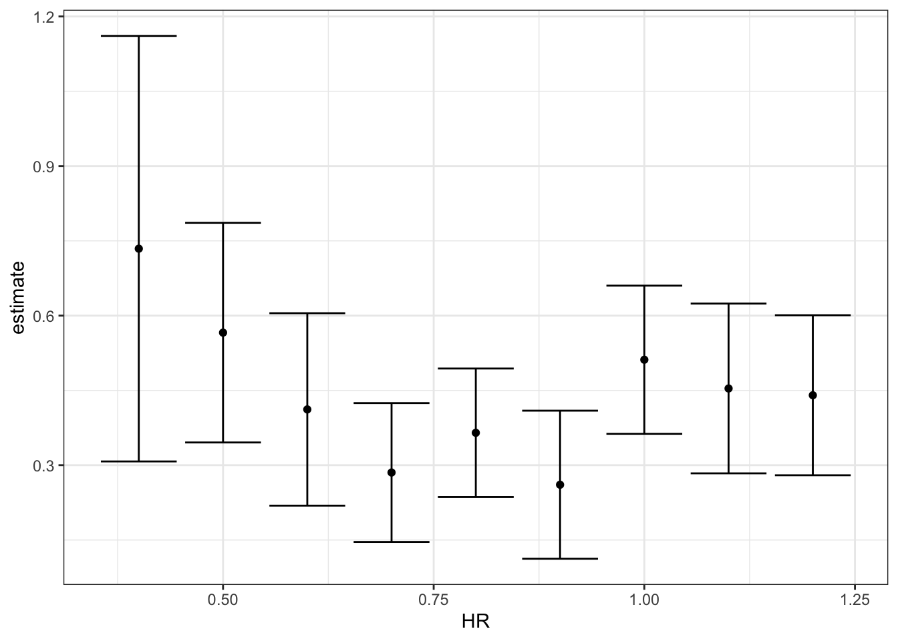
# inspect with glance
glance(fit)## # A tibble: 1 x 12
## r.squared adj.r.squared sigma statistic p.value df logLik AIC BIC deviance df.residual nobs
## <dbl> <dbl> <dbl> <dbl> <dbl> <dbl> <dbl> <dbl> <dbl> <dbl> <int> <int>
## 1 0.266 0.265 0.454 343. 1.35e-65 1 -596. 1199. 1214. 195. 947 9493.16 Assessment - Tibbles, do, and broom, part 1
- As seen in the videos, what problem do we encounter when we try to run a linear model on our baseball data, grouping by home runs?
- A. There is not enough data in some levels to run the model.
-
B. The
lm()function does not know how to handle grouped tibbles. -
C. The results of the
lm()function cannot be put into a tidy format.
- Tibbles are similar to what other class in R?
- A. Vectors
- B. Matrices
- C. Data frames
- D. Lists
- What are some advantages of tibbles compared to data frames?
- A. Tibbles display better.
- B. If you subset a tibble, you always get back a tibble.
- C. Tibbles can have complex entries.
- D. Tibbles can be grouped.
- What are two advantages of the do command, when applied to the tidyverse?
- A. It is faster than normal functions.
- B. It returns useful error messages.
- C. It understands grouped tibbles.
- D. It always returns a data.frame.
- You want to take the tibble
dat, which we used in the video on thedo()function, and run the linear model R ~ BB for each strata of HR. Then you want to add three new columns to your grouped tibble: the coefficient, standard error, and p-value for the BB term in the model.
You’ve already written the function get_slope(), shown below.
get_slope <- function(data) {
fit <- lm(R ~ BB, data = data)
sum.fit <- summary(fit)
data.frame(slope = sum.fit$coefficients[2, "Estimate"],
se = sum.fit$coefficients[2, "Std. Error"],
pvalue = sum.fit$coefficients[2, "Pr(>|t|)"])
}What additional code could you write to accomplish your goal?
dat %>%
group_by(HR) %>%
do(get_slope(.))## # A tibble: 9 x 4
## # Groups: HR [9]
## HR slope se pvalue
## <dbl> <dbl> <dbl> <dbl>
## 1 0.4 0.734 0.208 1.54e- 3
## 2 0.5 0.566 0.110 3.02e- 6
## 3 0.6 0.412 0.0974 4.80e- 5
## 4 0.7 0.285 0.0705 7.93e- 5
## 5 0.8 0.365 0.0653 9.13e- 8
## 6 0.9 0.261 0.0751 6.85e- 4
## 7 1 0.512 0.0751 3.28e-10
## 8 1.1 0.454 0.0855 1.03e- 6
## 9 1.2 0.440 0.0801 1.07e- 6- A.
dat %>%
group_by(HR) %>%
do(get_slope)- B.
dat %>%
group_by(HR) %>%
do(get_slope(.))- C.
dat %>%
group_by(HR) %>%
do(slope = get_slope(.))- D.
dat %>%
do(get_slope(.))- The output of a broom function is always what?
- A. A data.frame
- B. A list
- C. A vector
- You want to know whether the relationship between home runs and runs per game varies by baseball league.
You create the following dataset:
dat <- Teams %>% filter(yearID %in% 1961:2001) %>%
mutate(HR = HR/G,
R = R/G) %>%
select(lgID, HR, BB, R)What code would help you quickly answer this question?
dat %>%
group_by(lgID) %>%
do(tidy(lm(R ~ HR, data = .), conf.int = T)) %>%
filter(term == "HR")## # A tibble: 2 x 8
## # Groups: lgID [2]
## lgID term estimate std.error statistic p.value conf.low conf.high
## <fct> <chr> <dbl> <dbl> <dbl> <dbl> <dbl> <dbl>
## 1 AL HR 1.90 0.0734 25.9 1.29e-95 1.75 2.04
## 2 NL HR 1.76 0.0671 26.2 1.16e-95 1.62 1.89- A.
dat %>%
group_by(lgID) %>%
do(tidy(lm(R ~ HR, data = .), conf.int = T)) %>%
filter(term == "HR")- B.
dat %>%
group_by(lgID) %>%
do(glance(lm(R ~ HR, data = .)))- C.
dat %>%
do(tidy(lm(R ~ HR, data = .), conf.int = T)) %>%
filter(term == "HR")- D.
dat %>%
group_by(lgID) %>%
do(mod = lm(R ~ HR, data = .))3.17 Assessment - Tibbles, do, and broom, part 2
We have investigated the relationship between fathers’ heights and sons’ heights. But what about other parent-child relationships? Does one parent’s height have a stronger association with child height? How does the child’s gender affect this relationship in heights? Are any differences that we observe statistically significant?
The galton dataset is a sample of one male and one female child from each family in the GaltonFamilies dataset. The pair column denotes whether the pair is father and daughter, father and son, mother and daughter, or mother and son.
Create the galton dataset using the code below:
data("GaltonFamilies")
set.seed(1) # if you are using R 3.5 or earlier
set.seed(1, sample.kind = "Rounding") # if you are using R 3.6 or later## Warning in set.seed(1, sample.kind = "Rounding"): non-uniform 'Rounding' sampler usedgalton <- GaltonFamilies %>%
group_by(family, gender) %>%
sample_n(1) %>%
ungroup() %>%
gather(parent, parentHeight, father:mother) %>%
mutate(child = ifelse(gender == "female", "daughter", "son")) %>%
unite(pair, c("parent", "child"))
galton## # A tibble: 710 x 8
## family midparentHeight children childNum gender childHeight pair parentHeight
## <fct> <dbl> <int> <int> <fct> <dbl> <chr> <dbl>
## 1 001 75.4 4 2 female 69.2 father_daughter 78.5
## 2 001 75.4 4 1 male 73.2 father_son 78.5
## 3 002 73.7 4 4 female 65.5 father_daughter 75.5
## 4 002 73.7 4 2 male 72.5 father_son 75.5
## 5 003 72.1 2 2 female 68 father_daughter 75
## 6 003 72.1 2 1 male 71 father_son 75
## 7 004 72.1 5 5 female 63 father_daughter 75
## 8 004 72.1 5 2 male 68.5 father_son 75
## 9 005 69.1 6 5 female 62.5 father_daughter 75
## 10 005 69.1 6 1 male 72 father_son 75
## # … with 700 more rows- Group by
pairand summarize the number of observations in each group.
How many father-daughter pairs are in the dataset?
How many mother-son pairs are in the dataset?
galton %>%
group_by(pair) %>%
summarize(n = n())## `summarise()` ungrouping output (override with `.groups` argument)## # A tibble: 4 x 2
## pair n
## <chr> <int>
## 1 father_daughter 176
## 2 father_son 179
## 3 mother_daughter 176
## 4 mother_son 179- Calculate the correlation coefficients for fathers and daughters, fathers and sons, mothers and daughters and mothers and sons.
Which pair has the strongest correlation in heights?
galton %>%
group_by(pair) %>%
summarize(cor = cor(parentHeight, childHeight)) %>%
filter(cor == max(cor))## `summarise()` ungrouping output (override with `.groups` argument)## # A tibble: 1 x 2
## pair cor
## <chr> <dbl>
## 1 father_son 0.430Which pair has the weakest correlation in heights?
galton %>%
group_by(pair) %>%
summarize(cor = cor(parentHeight, childHeight)) %>%
filter(cor == min(cor))## `summarise()` ungrouping output (override with `.groups` argument)## # A tibble: 1 x 2
## pair cor
## <chr> <dbl>
## 1 mother_son 0.343Question 10 has two parts. The information here applies to both parts.
Use lm() and the broom package to fit regression lines for each parent-child pair type. Compute the least squares estimates, standard errors, confidence intervals and p-values for the parentHeight coefficient for each pair.
10a. What is the estimate of the father-daughter coefficient?
galton %>%
group_by(pair) %>%
do(tidy(lm(childHeight ~ parentHeight, data = .), conf.int = TRUE)) %>%
filter(term == "parentHeight", pair == "father_daughter") %>%
pull(estimate)## [1] 0.345For every 1-inch increase in mother’s height, how many inches does the typical son’s height increase?
galton %>%
group_by(pair) %>%
do(tidy(lm(childHeight ~ parentHeight, data = .), conf.int = TRUE)) %>%
filter(term == "parentHeight", pair == "mother_son") %>%
pull(estimate)## [1] 0.38110b. Which sets of parent-child heights are significantly correlated at a p-value cut off of .05?
galton %>%
group_by(pair) %>%
do(tidy(lm(childHeight ~ parentHeight, data = .), conf.int = TRUE)) %>%
filter(term == "parentHeight" & p.value < .05)## # A tibble: 4 x 8
## # Groups: pair [4]
## pair term estimate std.error statistic p.value conf.low conf.high
## <chr> <chr> <dbl> <dbl> <dbl> <dbl> <dbl> <dbl>
## 1 father_daughter parentHeight 0.345 0.0599 5.77 0.0000000356 0.227 0.464
## 2 father_son parentHeight 0.443 0.0700 6.33 0.00000000194 0.305 0.581
## 3 mother_daughter parentHeight 0.394 0.0720 5.47 0.000000156 0.252 0.536
## 4 mother_son parentHeight 0.381 0.0784 4.86 0.00000259 0.226 0.535- A. father-daughter
- B. father-son
- C. mother-daughter
- D. mother-son
Which of the following statements are true?
- A. All of the confidence intervals overlap each other.
- B. At least one confidence interval covers zero.
- C. The confidence intervals involving mothers’ heights are larger than the confidence intervals involving fathers’ heights.
- D. The confidence intervals involving daughters’ heights are larger than the confidence intervals involving sons’ heights.
- E. The data are consistent with inheritance of height being independent of the child’s gender.
- F. The data are consistent with inheritance of height being independent of the parent’s gender.
3.18 Building a Better Offensive Metric for Baseball
The textbook for this section is available here
Code
# linear regression with two variables
fit <- Teams %>%
filter(yearID %in% 1961:2001) %>%
mutate(BB = BB/G, HR = HR/G, R = R/G) %>%
lm(R ~ BB + HR, data = .)
tidy(fit, conf.int = TRUE)## # A tibble: 3 x 7
## term estimate std.error statistic p.value conf.low conf.high
## <chr> <dbl> <dbl> <dbl> <dbl> <dbl> <dbl>
## 1 (Intercept) 1.74 0.0824 21.2 7.62e- 83 1.58 1.91
## 2 BB 0.387 0.0270 14.3 1.20e- 42 0.334 0.440
## 3 HR 1.56 0.0490 31.9 1.78e-155 1.47 1.66# regression with BB, singles, doubles, triples, HR
fit <- Teams %>%
filter(yearID %in% 1961:2001) %>%
mutate(BB = BB / G,
singles = (H - X2B - X3B - HR) / G,
doubles = X2B / G,
triples = X3B / G,
HR = HR / G,
R = R / G) %>%
lm(R ~ BB + singles + doubles + triples + HR, data = .)
coefs <- tidy(fit, conf.int = TRUE)
coefs## # A tibble: 6 x 7
## term estimate std.error statistic p.value conf.low conf.high
## <chr> <dbl> <dbl> <dbl> <dbl> <dbl> <dbl>
## 1 (Intercept) -2.77 0.0862 -32.1 4.76e-157 -2.94 -2.60
## 2 BB 0.371 0.0117 31.6 1.87e-153 0.348 0.394
## 3 singles 0.519 0.0127 40.8 8.67e-217 0.494 0.544
## 4 doubles 0.771 0.0226 34.1 8.44e-171 0.727 0.816
## 5 triples 1.24 0.0768 16.1 2.12e- 52 1.09 1.39
## 6 HR 1.44 0.0243 59.3 0. 1.40 1.49# predict number of runs for each team in 2002 and plot
Teams %>%
filter(yearID %in% 2002) %>%
mutate(BB = BB/G,
singles = (H-X2B-X3B-HR)/G,
doubles = X2B/G,
triples =X3B/G,
HR=HR/G,
R=R/G) %>%
mutate(R_hat = predict(fit, newdata = .)) %>%
ggplot(aes(R_hat, R, label = teamID)) +
geom_point() +
geom_text(nudge_x=0.1, cex = 2) +
geom_abline()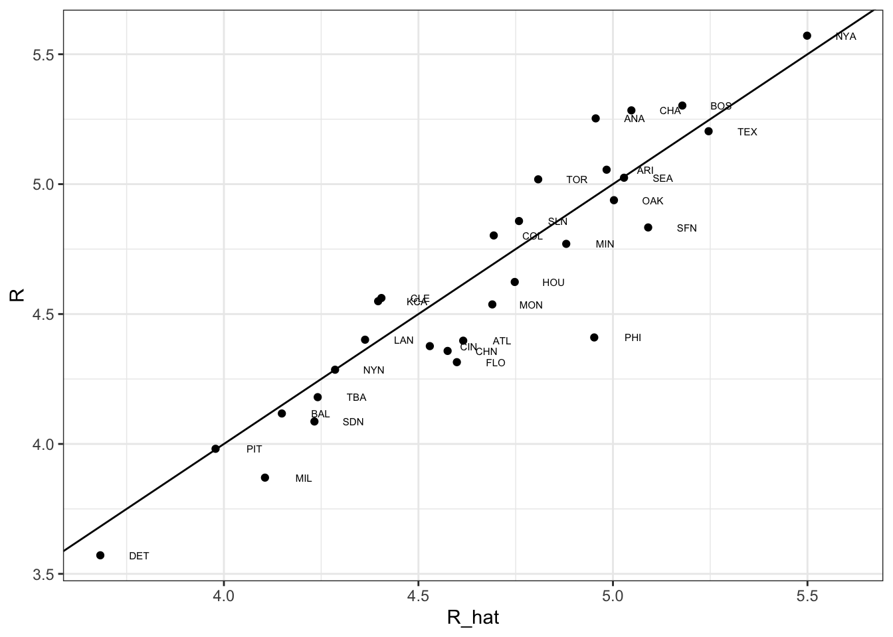
# average number of team plate appearances per game
pa_per_game <- Batting %>% filter(yearID == 2002) %>%
group_by(teamID) %>%
summarize(pa_per_game = sum(AB+BB)/max(G)) %>%
pull(pa_per_game) %>%
mean## `summarise()` ungrouping output (override with `.groups` argument)# compute per-plate-appearance rates for players available in 2002 using previous data
players <- Batting %>% filter(yearID %in% 1999:2001) %>%
group_by(playerID) %>%
mutate(PA = BB + AB) %>%
summarize(G = sum(PA)/pa_per_game,
BB = sum(BB)/G,
singles = sum(H-X2B-X3B-HR)/G,
doubles = sum(X2B)/G,
triples = sum(X3B)/G,
HR = sum(HR)/G,
AVG = sum(H)/sum(AB),
PA = sum(PA)) %>%
filter(PA >= 300) %>%
select(-G) %>%
mutate(R_hat = predict(fit, newdata = .))## `summarise()` ungrouping output (override with `.groups` argument)# plot player-specific predicted runs
qplot(R_hat, data = players, geom = "histogram", binwidth = 0.5, color = I("black"))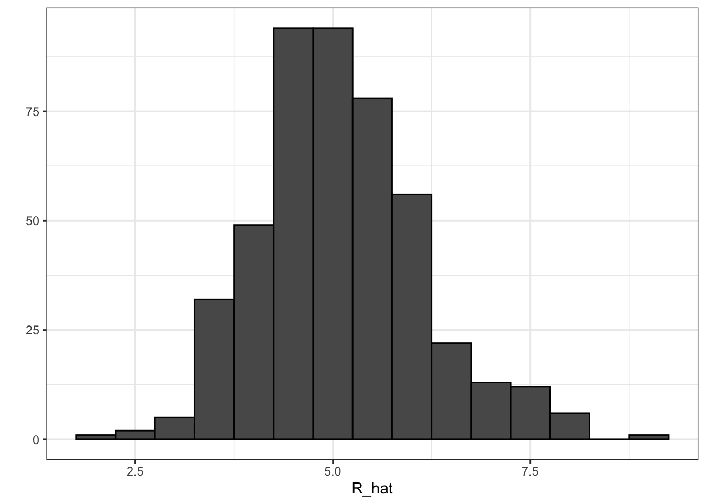
# add 2002 salary of each player
players <- Salaries %>%
filter(yearID == 2002) %>%
select(playerID, salary) %>%
right_join(players, by="playerID")
# add defensive position
position_names <- c("G_p","G_c","G_1b","G_2b","G_3b","G_ss","G_lf","G_cf","G_rf")
tmp_tab <- Appearances %>%
filter(yearID == 2002) %>%
group_by(playerID) %>%
summarize_at(position_names, sum) %>%
ungroup()
pos <- tmp_tab %>%
select(position_names) %>%
apply(., 1, which.max) ## Note: Using an external vector in selections is ambiguous.
## ℹ Use `all_of(position_names)` instead of `position_names` to silence this message.
## ℹ See <https://tidyselect.r-lib.org/reference/faq-external-vector.html>.
## This message is displayed once per session.players <- data_frame(playerID = tmp_tab$playerID, POS = position_names[pos]) %>%
mutate(POS = str_to_upper(str_remove(POS, "G_"))) %>%
filter(POS != "P") %>%
right_join(players, by="playerID") %>%
filter(!is.na(POS) & !is.na(salary))## Warning: `data_frame()` is deprecated as of tibble 1.1.0.
## Please use `tibble()` instead.
## This warning is displayed once every 8 hours.
## Call `lifecycle::last_warnings()` to see where this warning was generated.# add players' first and last names
players <- Master %>%
select(playerID, nameFirst, nameLast, debut) %>%
mutate(debut = as.Date(debut)) %>%
right_join(players, by="playerID")
# top 10 players
players %>% select(nameFirst, nameLast, POS, salary, R_hat) %>%
arrange(desc(R_hat)) %>%
top_n(10) ## Selecting by R_hat## nameFirst nameLast POS salary R_hat
## 1 Barry Bonds LF 15000000 9.05
## 2 Todd Helton 1B 5000000 8.23
## 3 Manny Ramirez LF 15462727 8.20
## 4 Sammy Sosa RF 15000000 8.19
## 5 Larry Walker RF 12666667 8.15
## 6 Jason Giambi 1B 10428571 7.99
## 7 Chipper Jones LF 11333333 7.64
## 8 Brian Giles LF 8063003 7.57
## 9 Albert Pujols LF 600000 7.54
## 10 Nomar Garciaparra SS 9000000 7.51# players with a higher metric have higher salaries
players %>% ggplot(aes(salary, R_hat, color = POS)) +
geom_point() +
scale_x_log10()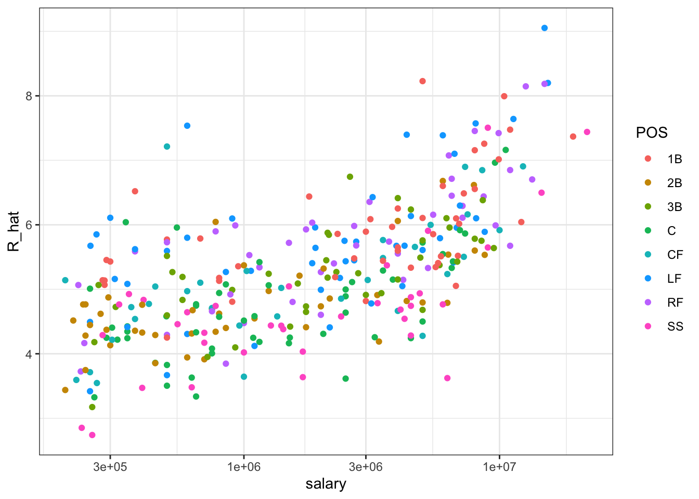
# remake plot without players that debuted after 1998
if(!require(lubridate)) install.packages("lubridate")## Loading required package: lubridate##
## Attaching package: 'lubridate'## The following objects are masked from 'package:base':
##
## date, intersect, setdiff, unionlibrary(lubridate)
players %>% filter(year(debut) < 1998) %>%
ggplot(aes(salary, R_hat, color = POS)) +
geom_point() +
scale_x_log10()
3.19 Building a Better Offensive Metric for Baseball: Linear Programming
A way to actually pick the players for the team can be done using what computer scientists call linear programming. Although we don’t go into this topic in detail in this course, we include the code anyway:
if(!require(reshape2)) install.packages("reshape2")## Loading required package: reshape2##
## Attaching package: 'reshape2'## The following object is masked from 'package:tidyr':
##
## smithsif(!require(lpSolve)) install.packages("lpSolve")## Loading required package: lpSolvelibrary(reshape2)
library(lpSolve)
players <- players %>% filter(debut <= "1997-01-01" & debut > "1988-01-01")
constraint_matrix <- acast(players, POS ~ playerID, fun.aggregate = length)## Using R_hat as value column: use value.var to override.npos <- nrow(constraint_matrix)
constraint_matrix <- rbind(constraint_matrix, salary = players$salary)
constraint_dir <- c(rep("==", npos), "<=")
constraint_limit <- c(rep(1, npos), 50*10^6)
lp_solution <- lp("max", players$R_hat,
constraint_matrix, constraint_dir, constraint_limit,
all.int = TRUE)This algorithm chooses these 9 players:
our_team <- players %>%
filter(lp_solution$solution == 1) %>%
arrange(desc(R_hat))
our_team %>% select(nameFirst, nameLast, POS, salary, R_hat)## nameFirst nameLast POS salary R_hat
## 1 Larry Walker RF 12666667 8.15
## 2 Nomar Garciaparra SS 9000000 7.51
## 3 Luis Gonzalez LF 4333333 7.40
## 4 Mike Piazza C 10571429 7.16
## 5 Jim Edmonds CF 7333333 6.90
## 6 Phil Nevin 3B 2600000 6.75
## 7 Greg Colbrunn 1B 1800000 6.44
## 8 Terry Shumpert 2B 775000 6.04We note that these players all have above average BB and HR rates while the same is not true for singles.
my_scale <- function(x) (x - median(x))/mad(x)
players %>% mutate(BB = my_scale(BB),
singles = my_scale(singles),
doubles = my_scale(doubles),
triples = my_scale(triples),
HR = my_scale(HR),
AVG = my_scale(AVG),
R_hat = my_scale(R_hat)) %>%
filter(playerID %in% our_team$playerID) %>%
select(nameFirst, nameLast, BB, singles, doubles, triples, HR, AVG, R_hat) %>%
arrange(desc(R_hat))## nameFirst nameLast BB singles doubles triples HR AVG R_hat
## 1 Larry Walker 1.0605 0.6554 0.922 1.562 1.566 2.835 2.904
## 2 Nomar Garciaparra 0.0274 1.6371 3.118 0.336 0.625 3.197 2.244
## 3 Luis Gonzalez 0.7046 0.0000 1.413 0.537 1.355 1.829 2.133
## 4 Mike Piazza 0.3129 -0.0547 -0.242 -1.274 2.035 1.252 1.891
## 5 Jim Edmonds 1.8074 -1.1409 0.674 -0.674 1.264 0.579 1.621
## 6 Phil Nevin 0.4909 -0.6479 0.764 -1.098 1.548 0.728 1.463
## 7 Greg Colbrunn 0.2703 0.6546 0.784 0.585 0.475 1.375 1.148
## 8 Terry Shumpert -0.1576 0.1221 1.326 3.908 -0.123 0.859 0.7443.20 On Base Plus Slugging (OPS)
Key point
The on-base-percentage plus slugging percentage (OPS) metric is:
\(\frac{\mbox{BB}}{\mbox{PA}} + \frac{(\mbox{Singles} + 2\mbox{Doubles} + 3\mbox{Triples} + 4\mbox{HR})}{\mbox{AB}}\)
3.21 Regression Fallacy
The textbook for this section is available here
Key points
- Regression can bring about errors in reasoning, especially when interpreting individual observations.
- The example showed in the video demonstrates that the “sophomore slump” observed in the data is caused by regressing to the mean.
Code
The code to create a table with player ID, their names, and their most played position:
playerInfo <- Fielding %>%
group_by(playerID) %>%
arrange(desc(G)) %>%
slice(1) %>%
ungroup %>%
left_join(Master, by="playerID") %>%
select(playerID, nameFirst, nameLast, POS)The code to create a table with only the ROY award winners and add their batting statistics:
ROY <- AwardsPlayers %>%
filter(awardID == "Rookie of the Year") %>%
left_join(playerInfo, by="playerID") %>%
rename(rookie_year = yearID) %>%
right_join(Batting, by="playerID") %>%
mutate(AVG = H/AB) %>%
filter(POS != "P")The code to keep only the rookie and sophomore seasons and remove players who did not play sophomore seasons:
ROY <- ROY %>%
filter(yearID == rookie_year | yearID == rookie_year+1) %>%
group_by(playerID) %>%
mutate(rookie = ifelse(yearID == min(yearID), "rookie", "sophomore")) %>%
filter(n() == 2) %>%
ungroup %>%
select(playerID, rookie_year, rookie, nameFirst, nameLast, AVG)The code to use the spread function to have one column for the rookie and sophomore years batting averages:
ROY <- ROY %>% spread(rookie, AVG) %>% arrange(desc(rookie))
ROY## # A tibble: 102 x 6
## playerID rookie_year nameFirst nameLast rookie sophomore
## <chr> <int> <chr> <chr> <dbl> <dbl>
## 1 mccovwi01 1959 Willie McCovey 0.354 0.238
## 2 suzukic01 2001 Ichiro Suzuki 0.350 0.321
## 3 bumbral01 1973 Al Bumbry 0.337 0.233
## 4 lynnfr01 1975 Fred Lynn 0.331 0.314
## 5 pujolal01 2001 Albert Pujols 0.329 0.314
## 6 troutmi01 2012 Mike Trout 0.326 0.323
## 7 braunry02 2007 Ryan Braun 0.324 0.285
## 8 olivato01 1964 Tony Oliva 0.323 0.321
## 9 hargrmi01 1974 Mike Hargrove 0.323 0.303
## 10 darkal01 1948 Al Dark 0.322 0.276
## # … with 92 more rowsThe code to calculate the proportion of players who have a lower batting average their sophomore year:
mean(ROY$sophomore - ROY$rookie <= 0)## [1] 0.686The code to do the similar analysis on all players that played the 2013 and 2014 seasons and batted more than 130 times (minimum to win Rookie of the Year):
two_years <- Batting %>%
filter(yearID %in% 2013:2014) %>%
group_by(playerID, yearID) %>%
filter(sum(AB) >= 130) %>%
summarize(AVG = sum(H)/sum(AB)) %>%
ungroup %>%
spread(yearID, AVG) %>%
filter(!is.na(`2013`) & !is.na(`2014`)) %>%
left_join(playerInfo, by="playerID") %>%
filter(POS!="P") %>%
select(-POS) %>%
arrange(desc(`2013`)) %>%
select(nameFirst, nameLast, `2013`, `2014`)## `summarise()` regrouping output by 'playerID' (override with `.groups` argument)two_years## # A tibble: 312 x 4
## nameFirst nameLast `2013` `2014`
## <chr> <chr> <dbl> <dbl>
## 1 Miguel Cabrera 0.348 0.313
## 2 Hanley Ramirez 0.345 0.283
## 3 Michael Cuddyer 0.331 0.332
## 4 Scooter Gennett 0.324 0.289
## 5 Joe Mauer 0.324 0.277
## 6 Mike Trout 0.323 0.287
## 7 Chris Johnson 0.321 0.263
## 8 Freddie Freeman 0.319 0.288
## 9 Yasiel Puig 0.319 0.296
## 10 Yadier Molina 0.319 0.282
## # … with 302 more rowsThe code to see what happens to the worst performers of 2013:
arrange(two_years, `2013`)## # A tibble: 312 x 4
## nameFirst nameLast `2013` `2014`
## <chr> <chr> <dbl> <dbl>
## 1 Danny Espinosa 0.158 0.219
## 2 Dan Uggla 0.179 0.149
## 3 Jeff Mathis 0.181 0.2
## 4 B. J. Upton 0.184 0.208
## 5 Adam Rosales 0.190 0.262
## 6 Aaron Hicks 0.192 0.215
## 7 Chris Colabello 0.194 0.229
## 8 J. P. Arencibia 0.194 0.177
## 9 Tyler Flowers 0.195 0.241
## 10 Ryan Hanigan 0.198 0.218
## # … with 302 more rowsThe code to see the correlation for performance in two separate years:
qplot(`2013`, `2014`, data = two_years)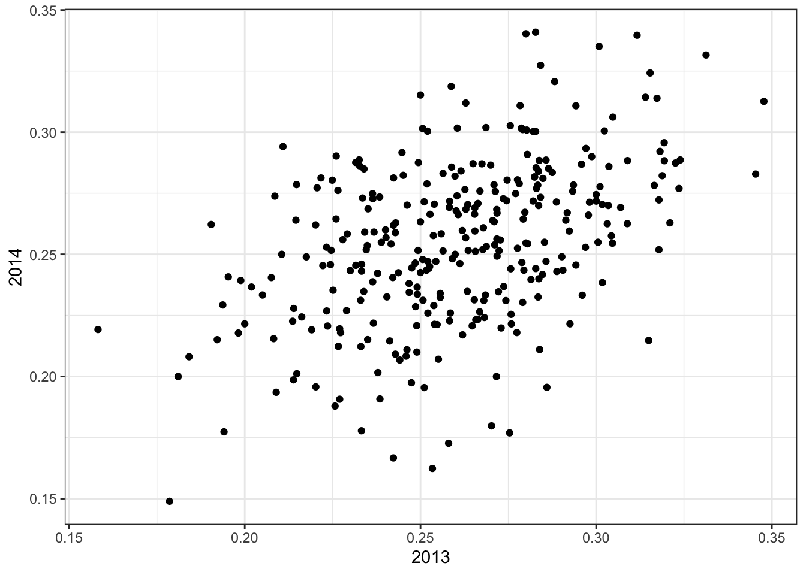
summarize(two_years, cor(`2013`,`2014`))## # A tibble: 1 x 1
## `cor(\`2013\`, \`2014\`)`
## <dbl>
## 1 0.4603.22 Measurement Error Models
The textbook for this section is available here
Key points
- Up to now, all our linear regression examples have been applied to two or more random variables. We assume the pairs are bivariate normal and use this to motivate a linear model.
- Another use for linear regression is with measurement error models, where it is common to have a non-random covariate (such as time). Randomness is introduced from measurement error rather than sampling or natural variability.
Code
The code to use dslabs function rfalling_object to generate simulations of dropping balls:
falling_object <- rfalling_object()The code to draw the trajectory of the ball:
falling_object %>%
ggplot(aes(time, observed_distance)) +
geom_point() +
ylab("Distance in meters") +
xlab("Time in seconds")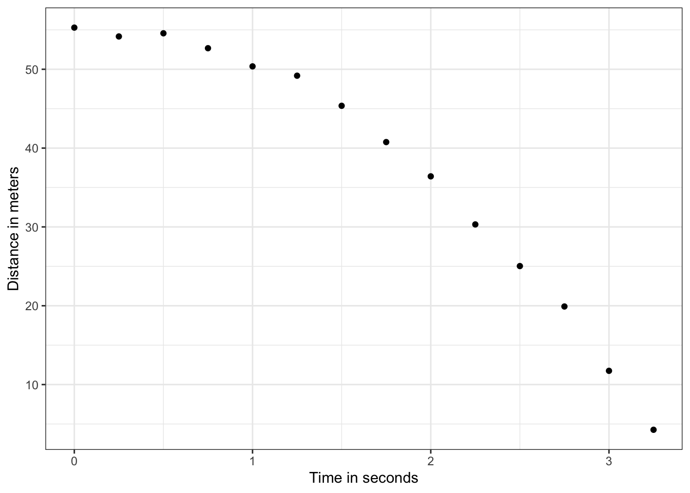
The code to use the lm() function to estimate the coefficients:
fit <- falling_object %>%
mutate(time_sq = time^2) %>%
lm(observed_distance~time+time_sq, data=.)
tidy(fit)## # A tibble: 3 x 5
## term estimate std.error statistic p.value
## <chr> <dbl> <dbl> <dbl> <dbl>
## 1 (Intercept) 55.0 0.434 127. 9.15e-19
## 2 time 0.888 0.620 1.43 1.80e- 1
## 3 time_sq -5.08 0.184 -27.7 1.61e-11The code to check if the estimated parabola fits the data:
augment(fit) %>%
ggplot() +
geom_point(aes(time, observed_distance)) +
geom_line(aes(time, .fitted), col = "blue")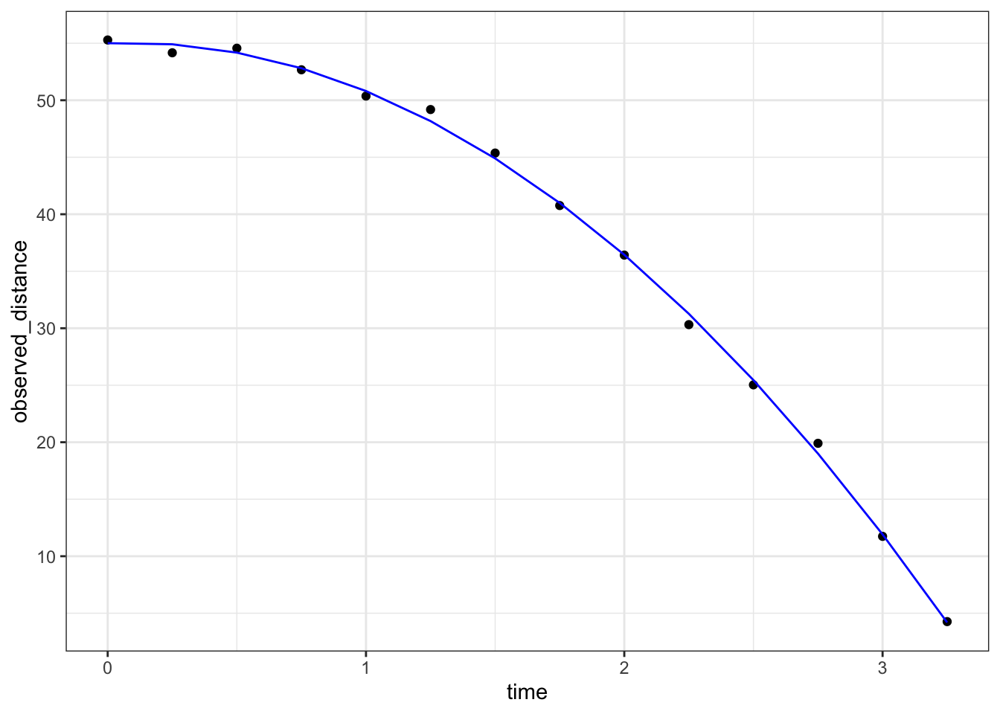
The code to see the summary statistic of the regression:
tidy(fit, conf.int = TRUE)## # A tibble: 3 x 7
## term estimate std.error statistic p.value conf.low conf.high
## <chr> <dbl> <dbl> <dbl> <dbl> <dbl> <dbl>
## 1 (Intercept) 55.0 0.434 127. 9.15e-19 54.1 56.0
## 2 time 0.888 0.620 1.43 1.80e- 1 -0.476 2.25
## 3 time_sq -5.08 0.184 -27.7 1.61e-11 -5.49 -4.683.23 Assessment - Regression and Baseball, part 1
- What is the final linear model (in the video “Building a Better Offensive Metric for Baseball”) we used to predict runs scored per game?
-
A.
lm(R ~ BB + HR) -
B.
lm(HR ~ BB + singles + doubles + triples) -
C.
lm(R ~ BB + singles + doubles + triples + HR) -
D.
lm(R ~ singles + doubles + triples + HR)
- We want to estimate runs per game scored by individual players, not just by teams. What summary metric do we calculate to help estimate this?
Look at the code from the video “Building a Metter Offensive Metric for Baseball” for a hint:
pa_per_game <- Batting %>%
filter(yearID == 2002) %>%
group_by(teamID) %>%
summarize(pa_per_game = sum(AB+BB)/max(G)) %>%
.$pa_per_game %>%
mean-
A.
pa_per_game: the mean number of plate appearances per team per game for each team -
B.
pa_per_game: the mean number of plate appearances per game for each player -
C.
pa_per_game: the number of plate appearances per team per game, averaged across all teams
- Imagine you have two teams. Team A is comprised of batters who, on average, get two bases on balls, four singles, one double, and one home run. Team B is comprised of batters who, on average, get one base on balls, six singles, two doubles, and one triple.
Which team scores more runs, as predicted by our model?
- A. Team A
- B. Team B
- C. Tie
- D. Impossible to know
- The on-base-percentage plus slugging percentage (OPS) metric gives the most weight to:
- A. Singles
- B. Doubles
- C. Triples
- D. Home Runs
- What statistical concept properly explains the “sophomore slump”?
- A. Regression to the mean
- B. Law of averages
- C. Normal distribution
- In our model of time vs. observed_distance in the video “Measurement Error Models”, the randomness of our data was due to:
- A. sampling
- B. natural variability
- C. measurement error
- Which of the following are important assumptions about the measurement errors in this experiment?
- A. The measurement error is random
- B. The measurement error is independent
- C. The measurement error has the same distribution for each time i
- Which of the following scenarios would violate an assumption of our measurement error model?
- A. The experiment was conducted on the moon.
- B. There was one position where it was particularly difficult to see the dropped ball.
- C. The experiment was only repeated 10 times, not 100 times.
3.24 Assessment - Regression and Baseball, part 2
Question 9 has two parts. Use the information below to answer both parts.
Use the Teams data frame from the Lahman package. Fit a multivariate linear regression model to obtain the effects of BB and HR on Runs (R) in 1971. Use the tidy() function in the broom package to obtain the results in a data frame.
9a. What is the estimate for the effect of BB on runs?
Teams %>%
filter(yearID == 1971) %>%
lm(R ~ BB + HR, data = .) %>%
tidy() %>%
filter(term == "BB") %>%
pull(estimate)## [1] 0.414What is the estimate for the effect of HR on runs?
Teams %>%
filter(yearID == 1971) %>%
lm(R ~ BB + HR, data = .) %>%
tidy() %>%
filter(term == "HR") %>%
pull(estimate)## [1] 1.39b. Interpret the p-values for the estimates using a cutoff of 0.05.
Which of the following is the correct interpretation?
fit <- Teams %>% filter(yearID %in% 1971) %>%
mutate(BB = BB/G, HR = HR/G, R = R/G) %>%
lm(R ~ BB + HR, data = .)
tidy(fit, conf.int = TRUE)## # A tibble: 3 x 7
## term estimate std.error statistic p.value conf.low conf.high
## <chr> <dbl> <dbl> <dbl> <dbl> <dbl> <dbl>
## 1 (Intercept) 1.60 0.665 2.40 0.0256 0.215 2.98
## 2 BB 0.412 0.203 2.03 0.0552 -0.0101 0.835
## 3 HR 1.29 0.427 3.03 0.00639 0.406 2.18- A. Both BB and HR have a nonzero effect on runs.
- B. HR has a significant effect on runs, but the evidence is not strong enough to suggest BB also does.
- C. BB has a significant effect on runs, but the evidence is not strong enough to suggest HR also does.
- D. Neither BB nor HR have a statistically significant effect on runs.
- Repeat the above exercise to find the effects of BB and HR on runs (
R) for every year from 1961 to 2018 usingdo()and the broom package.
Make a scatterplot of the estimate for the effect of BB on runs over time and add a trend line with confidence intervals.
res <- Teams %>%
filter(yearID %in% 1961:2018) %>%
group_by(yearID) %>%
do(tidy(lm(R ~ BB + HR, data = .))) %>%
ungroup()
res %>%
filter(term == "BB") %>%
ggplot(aes(yearID, estimate)) +
geom_point() +
geom_smooth(method = "lm")## `geom_smooth()` using formula 'y ~ x'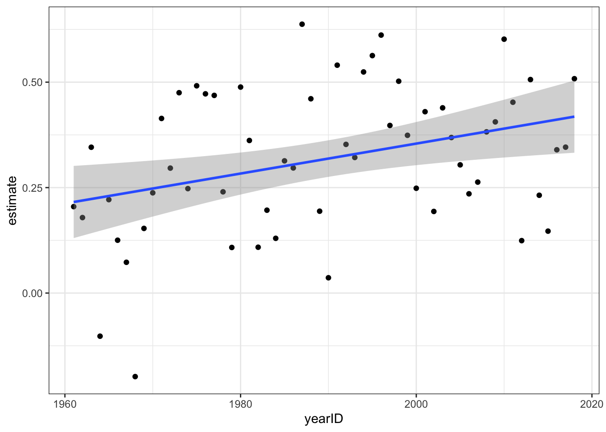
Fill in the blank to complete the statement:
The effect of BB on runs has increased over time.
- Fit a linear model on the results from Question 10 to determine the effect of year on the impact of BB.
For each additional year, by what value does the impact of BB on runs change?
res %>%
filter(term == "BB") %>%
lm(estimate ~ yearID, data = .) %>%
tidy() %>%
filter(term == "yearID") %>%
pull(estimate)## [1] 0.00355What is the p-value for this effect?
res %>%
filter(term == "BB") %>%
lm(estimate ~ yearID, data = .) %>%
tidy() %>%
filter(term == "yearID") %>%
pull(p.value)## [1] 0.008073.25 Assessment - Linear Models
This assessment has 6 multi-part questions that will all use the setup below.
Game attendance in baseball varies partly as a function of how well a team is playing.
Load the Lahman library. The Teams data frame contains an attendance column. This is the total attendance for the season. To calculate average attendance, divide by the number of games played, as follows:
Teams_small <- Teams %>%
filter(yearID %in% 1961:2001) %>%
mutate(avg_attendance = attendance/G)Use linear models to answer the following 3-part question about Teams_small.
1a. Use runs (R) per game to predict average attendance.
For every 1 run scored per game, average attendance increases by how much?
# find regression line predicting attendance from R and take slope
Teams_small %>%
mutate(R_per_game = R/G) %>%
lm(avg_attendance ~ R_per_game, data = .) %>%
.$coef %>%
.[2]## R_per_game
## 4117Use home runs (HR) per game to predict average attendance.
For every 1 home run hit per game, average attendance increases by how much?
Teams_small %>%
mutate(HR_per_game = HR/G) %>%
lm(avg_attendance ~ HR_per_game, data = .) %>%
.$coef %>%
.[2]## HR_per_game
## 81131b. Use number of wins to predict average attendance; do not normalize for number of games.
For every game won in a season, how much does average attendance increase?
Teams_small %>%
lm(avg_attendance ~ W, data = .) %>%
.$coef %>%
.[2]## W
## 121Suppose a team won zero games in a season.
Predict the average attendance.
Teams_small %>%
lm(avg_attendance ~ W, data = .) %>%
.$coef %>%
.[1]## (Intercept)
## 11291c. Use year to predict average attendance.
How much does average attendance increase each year?
Teams_small %>%
lm(avg_attendance ~ yearID, data = .) %>%
.$coef %>%
.[2]## yearID
## 244- Game wins, runs per game and home runs per game are positively correlated with attendance. We saw in the course material that runs per game and home runs per game are correlated with each other. Are wins and runs per game or wins and home runs per game correlated?
What is the correlation coefficient for wins and runs per game?
cor(Teams_small$W, Teams_small$R/Teams_small$G)## [1] 0.412What is the correlation coefficient for wins and home runs per game?
cor(Teams_small$W, Teams_small$HR/Teams_small$G)## [1] 0.274Stratify Teams_small by wins: divide number of wins by 10 and then round to the nearest integer. Keep only strata 5 through 10, which have 20 or more data points.
Use the stratified dataset to answer this three-part question.
3a. How many observations are in the 8 win strata? (Note that due to division and rounding, these teams have 75-85 wins.)
dat <- Teams_small %>%
mutate(W_strata = round(W/10)) %>%
filter(W_strata >= 5 & W_strata <= 10)
sum(dat$W_strata == 8)## [1] 3383b. Calculate the slope of the regression line predicting average attendance given runs per game for each of the win strata.
Which win stratum has the largest regression line slope?
# calculate slope of regression line after stratifying by R per game
dat %>%
group_by(W_strata) %>%
summarize(slope = cor(R/G, avg_attendance)*sd(avg_attendance)/sd(R/G))## `summarise()` ungrouping output (override with `.groups` argument)## # A tibble: 6 x 2
## W_strata slope
## <dbl> <dbl>
## 1 5 4362.
## 2 6 4343.
## 3 7 3888.
## 4 8 3128.
## 5 9 3701.
## 6 10 3107.- A. 5
- B. 6
- C. 7
- D. 8
- E. 9
- F. 10
Calculate the slope of the regression line predicting average attendance given HR per game for each of the win strata.
Which win stratum has the largest regression line slope?
# calculate slope of regression line after stratifying by HR per game
dat %>%
group_by(W_strata) %>%
summarize(slope = cor(HR/G, avg_attendance)*sd(avg_attendance)/sd(HR/G))## `summarise()` ungrouping output (override with `.groups` argument)## # A tibble: 6 x 2
## W_strata slope
## <dbl> <dbl>
## 1 5 10192.
## 2 6 7032.
## 3 7 8931.
## 4 8 6301.
## 5 9 5863.
## 6 10 4917.- A. 5
- B. 6
- C. 7
- D. 8
- E. 9
- F. 10
3c. Which of the followng are true about the effect of win strata on average attendance?
- A. Across all win strata, runs per game are positively correlated with average attendance.
- B. Runs per game have the strongest effect on attendance when a team wins many games.
- C. After controlling for number of wins, home runs per game are not correlated with attendance.
- D. Home runs per game have the strongest effect on attendance when a team does not win many games.
- E. Among teams with similar numbers of wins, teams with more home runs per game have larger average attendance.
- Fit a multivariate regression determining the effects of runs per game, home runs per game, wins, and year on average attendance. Use the original
Teams_smallwins column, not the win strata from question 3.
What is the estimate of the effect of runs per game on average attendance?
fit <- Teams_small %>%
mutate(R_per_game = R/G,
HR_per_game = HR/G) %>%
lm(avg_attendance ~ R_per_game + HR_per_game + W + yearID, data = .)
tidy(fit) %>%
filter(term == "R_per_game") %>%
pull(estimate)## [1] 322What is the estimate of the effect of home runs per game on average attendance?
tidy(fit) %>%
filter(term == "HR_per_game") %>%
pull(estimate)## [1] 1798What is the estimate of the effect of number of wins in a season on average attendance?
tidy(fit) %>%
filter(term == "W") %>%
pull(estimate)## [1] 117- Use the multivariate regression model from Question 4. Suppose a team averaged 5 runs per game, 1.2 home runs per game, and won 80 games in a season.
What would this team’s average attendance be in 2002?
predict(fit, data.frame(R_per_game = 5, HR_per_game = 1.2, W = 80, yearID = 2002))## 1
## 16149What would this team’s average attendance be in 1960?
predict(fit, data.frame(R_per_game = 5, HR_per_game = 1.2, W = 80, yearID = 1960))## 1
## 6505- Use your model from Question 4 to predict average attendance for teams in 2002 in the original Teams data frame.
What is the correlation between the predicted attendance and actual attendance?
newdata <- Teams %>%
filter(yearID == 2002) %>%
mutate(avg_attendance = attendance/G,
R_per_game = R/G,
HR_per_game = HR/G)
preds <- predict(fit, newdata)
cor(preds, newdata$avg_attendance)## [1] 0.519